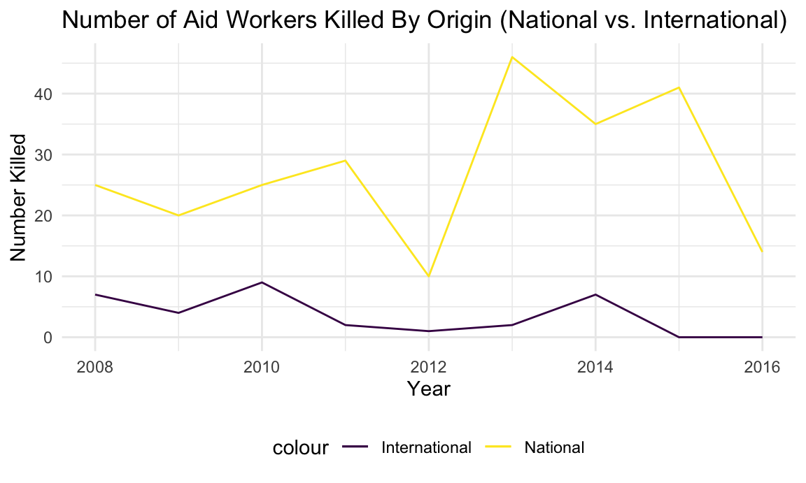

Afghanistan Case Study
library(tidyverse)## ── Attaching packages ────────────────────────────────────────────────────────────────────────────────────────────── tidyverse 1.3.0 ──## ✓ ggplot2 3.3.2 ✓ purrr 0.3.4
## ✓ tibble 3.0.3 ✓ dplyr 1.0.2
## ✓ tidyr 1.1.2 ✓ stringr 1.4.0
## ✓ readr 1.3.1 ✓ forcats 0.5.0## ── Conflicts ───────────────────────────────────────────────────────────────────────────────────────────────── tidyverse_conflicts() ──
## x dplyr::filter() masks stats::filter()
## x dplyr::lag() masks stats::lag()library(readxl)
library(p8105.datasets)
library(hexbin)
library(patchwork)
library(leaflet)
library(lubridate)##
## Attaching package: 'lubridate'## The following objects are masked from 'package:base':
##
## date, intersect, setdiff, unionlibrary(xml2)
library(rvest)##
## Attaching package: 'rvest'## The following object is masked from 'package:purrr':
##
## pluck## The following object is masked from 'package:readr':
##
## guess_encodinglibrary(plotly)##
## Attaching package: 'plotly'## The following object is masked from 'package:ggplot2':
##
## last_plot## The following object is masked from 'package:stats':
##
## filter## The following object is masked from 'package:graphics':
##
## layoutdevtools::install_github("benmarwick/wordcountaddin", type = "source", dependencies = TRUE)## Skipping install of 'wordcountaddin' from a github remote, the SHA1 (8c063135) has not changed since last install.
## Use `force = TRUE` to force installationknitr::opts_chunk$set(
fig.width = 6,
fig.asp = .6,
out.width = "90%"
)
theme_set(theme_minimal() + theme(legend.position = "bottom"))
options(
ggplot2.continuous.colour = "viridis",
ggplot2.continuous.fill = "viridis"
)
scale_colour_discrete = scale_colour_viridis_d
scale_fill_discrete = scale_fill_viridis_d##Explain
We chose to focus on Afghanistan because it has consistently been among the most deadly countries for aid workers, so we expected fairly robust data. Further, Afghanistan especially has been heavily affected by American occupation, which has changed dramatically between presidential administrations.
Which datasets are being used… We are using the aid worker dataset and the Uppsala datset to compare aidworker deaths to Civilian deaths. We also intended to use a dataset (SHCC) describing attacks on aidworkers, health facilities, and healthcare transport, but this dataset was not robust enough to support meaningful data visualization. As such, we chose to exclude it.
Using the years 2008-2016 because…. and supply code 2008-2016 chosen to see whether there might be differences between the Bush (2008-2012) and Obama (2012-2016) administrations.
Aidworker dataset - cleaning and tailoring
#Kailey notes: from section 1 cleaning and filtered for afghanistan/year
url = "https://aidworkersecurity.org/incidents/search"
aidworker_html = read_html(url)
aidworker_df =
aidworker_html %>%
html_nodes(css = "table") %>%
first() %>%
html_table() %>%
as_tibble()
afghan_aidworker_df =
aidworker_df %>%
janitor::clean_names() %>%
select(-source, -verified) %>%
rename(year = year_sort_descending) %>%
mutate(intl_org_affected =
case_when(
un != 0 ~ "yes",
ingo != 0 ~ "yes",
icrc != 0 ~ "yes",
ifrc != 0 ~ "yes",
other != 0 ~ "yes",
lngo_and_nrcs != 0 ~ "no"),
intl_org_affected = as.factor(intl_org_affected)) %>%
relocate(id, month, day, year, country, intl_org_affected) %>%
filter(country == "Afghanistan") %>%
filter(year %in% c("2008", "2009", "2010", "2011", "2012", "2013", "2014", "2015", "2016")) Starting EDA and vis
Internationals vs. nationals killed (Not in the to-do list but has an interesting spikes and dips; check historical context?)
afghan_aidworker_international_df =
afghan_aidworker_df %>%
group_by(year) %>%
summarise(sum(internationals_killed)) %>%
mutate(
internationals_killed_tot = `sum(internationals_killed)`
) %>%
select(year, internationals_killed_tot) ## `summarise()` ungrouping output (override with `.groups` argument)afghan_aidworker_national_df =
afghan_aidworker_df %>%
group_by(year) %>%
summarise(sum(nationals_killed)) %>%
mutate(
nationals_killed_tot = `sum(nationals_killed)`
) %>%
select(year, nationals_killed_tot) ## `summarise()` ungrouping output (override with `.groups` argument)afghan_aidworker_df_new =
left_join(afghan_aidworker_international_df, afghan_aidworker_national_df, by = "year")
afghan_aidworker_df_new %>%
ggplot(aes(x = year, y = internationals_killed_tot, col = "International")) +
geom_line() +
geom_line(aes(x = year, y = nationals_killed_tot, col = "National")) +
labs(
title = "Number of Aid Workers Killed By Origin (National vs. International)",
x = "Year",
y = "Number Killed"
)
2012 - The significant drop in aid worker death is correlated with the withdrawal of half of American troops in Afghanistan.
2013 - A sharp increase in aid worker deaths, primarily in rural areas. In 2013, aid workers were frequently caught in crossfire, ambush, and accidents. As you can see in this figure, a majority of aid workers killed are of national origin. According to a report published by the UN in 2013, “Afghan aid workers suffered heavy casualties in part because international organizations were using local staff and local organizations to reduce their own risk…About 85 per cent of United Nations staff involved in security incidents were Afghans; for international non-governmental organizations, it was 76 per cent.” It is important to note here that national aid workers are more frequently engaged in front line work than their international counterparts, especially in extremely dangerous operations. “Security arrangements of those organizations and the United Nations often left local humanitarian organizations less secure” (UN 2013). Local aid workers, often acting for international aid organizations, rarely received the same security protections as their international colleagues, forcing them into increasingly unsafe situations.
After noting this sharp increase in attacks against local aid workers, many aid organizations took steps to decrease apparent distinctions between international and national aid workers in an effort to protect national aid workers’ security.
More visualizations using aidworker df
means_attack_p =
afghan_aidworker_df %>%
plot_ly(
x = ~year, y = ~total_victims, color = ~means_of_attack,
type = "scatter") %>%
layout(
title = "Victims per year by attack type")
attack_context_p =
afghan_aidworker_df %>%
plot_ly(
x = ~year, y = ~total_victims, color = ~attack_context,
type = "scatter") %>%
layout(
title = "Victims per Year by Attack Context")
subplot(means_attack_p, attack_context_p)## No scatter mode specifed:
## Setting the mode to markers
## Read more about this attribute -> https://plot.ly/r/reference/#scatter-mode## Warning: `arrange_()` is deprecated as of dplyr 0.7.0.
## Please use `arrange()` instead.
## See vignette('programming') for more help
## This warning is displayed once every 8 hours.
## Call `lifecycle::last_warnings()` to see where this warning was generated.## Warning in RColorBrewer::brewer.pal(N, "Set2"): n too large, allowed maximum for palette Set2 is 8
## Returning the palette you asked for with that many colors
## Warning in RColorBrewer::brewer.pal(N, "Set2"): n too large, allowed maximum for palette Set2 is 8
## Returning the palette you asked for with that many colors## No scatter mode specifed:
## Setting the mode to markers
## Read more about this attribute -> https://plot.ly/r/reference/#scatter-modeOf known attack types affecting aid workers in Afghanistan, the most common are kidnappings, shootings, ambushes, and raids. The largest attack was a 2015 aerial bombardment by the U.S. military, in which aid workers were caught in combat/crossfire that left 19 dead and 37 wounded (including patients and aid workers) (Reuters).
On October 3rd, 2015, following Taliban insurgents storming the capital, the U.S. military conducted a 4-hour airstrike that hit a hospital run by Médecins Sans Frontières (MSF, Doctors Without Borders), destroying the main hospital building. Patients unable to escape burned to death, while hospital staff scrambled to evacuate as many patients as possible (Reuters).
Kunduz was the Taliban’s last stronghold before being driven out by NATO.
afghan_aidworker_df %>%
ggplot(aes(x = location, fill = means_of_attack)) +
geom_bar() +
labs(
title = "Total Attacks per Location, by Means of Attack (2008-2016)",
x = "Location",
y = "Number of Attacks"
) 
Aid workers are most vulnerable when traveling on the road. In many of these incidents, aid workers are collateral damage, caught in the crossfire between government vehicles (Afghan National Army and International Security Assistance Force). After the International Security Assistance Force withdrew in 2011, road ambushes and attacks increased consistently.
Roads are extremely difficult to protect. Attacks and ambush can come in the form of illegitimate checkpoints, road blocks, and geographically poorly protected areas (bends in the road, choke points). Drive-by shootings, carjacking, and IEDs (Landmines) also represent major challenges to road travel. IEDs especially do not involve significant planning and are difficult to predict and avoid, making them especially common and particularly dangerous (Aid Worker Security Report 2014).
From section 1 vis:
looking at frequency of attacks on staff of various organizations yes/no
afghan_aidworker_df %>%
ggplot(aes(x = intl_org_affected)) +
geom_bar(color = "blue", fill = "#FFE4E4") +
labs(
title = "Distribution of Attacks by Organization Affected (2008-2016)",
x = "International Organization Affected",
y = "Number of Attacks"
)International organizations are more frequently targeted, especially in Afghanistan, due to local mistrust of international actors (especially those from the West). These acts of violence were primarily perpetrated by the Taliban.
International vs National staff attacks
af_pct_intl_ntl =
afghan_aidworker_df %>%
group_by(year) %>%
summarize(tot_national = sum(total_national_staff),
tot_intl = sum(total_international_staff),
tot_both = sum(total_victims),
pct_intl = (tot_intl/tot_both)*100,
pct_national = (tot_national/tot_both)*100) %>%
ggplot(aes(x = year, y = pct_national, col = 3)) +
geom_line() +
geom_line(aes(x = year, y = pct_intl, col = 2)) +
labs(
x = "Year",
y = "% Attacked"
) ## `summarise()` ungrouping output (override with `.groups` argument)Uppsala data upload and cleaning/tailoring (downloaded data for Afghanistan only)
#Looking at deaths among all civilians verses all aidworkers side by side
#Aidworkers, from the Aidworker dataset:
aidworker_deaths_p =
afghan_aidworker_df %>%
group_by(year) %>%
summarise(sum(total_victims)) %>%
mutate(
tot_victims = `sum(total_victims)`
) %>%
select(-`sum(total_victims)`) %>%
ggplot(aes(x = year, y = tot_victims)) +
geom_line(color = "red", size =2) +
labs(
title = "Total # Aid Workers Killed per Year",
x = "Year",
y = "Number Aid Workers Killed"
) ## `summarise()` ungrouping output (override with `.groups` argument)#All civilians, from the Uppsala dataset:
afghan_upp_df =
read_csv("./data/afghanistan_uppsala.csv") %>%
janitor::clean_names() %>%
filter(year %in% c("2008", "2009", "2010", "2011", "2012", "2013", "2014", "2015", "2016")) %>%
select(year, deaths_civilians) %>%
group_by(year) %>%
summarise(sum(deaths_civilians)) %>%
mutate(
deaths_civilians_tot = `sum(deaths_civilians)`
) %>%
select(-`sum(deaths_civilians)`) ## Parsed with column specification:
## cols(
## .default = col_double(),
## relid = col_character(),
## active_year = col_logical(),
## code_status = col_character(),
## conflict_name = col_character(),
## dyad_name = col_character(),
## side_a = col_character(),
## side_b = col_character(),
## source_article = col_character(),
## source_office = col_character(),
## source_date = col_character(),
## source_headline = col_character(),
## source_original = col_character(),
## where_coordinates = col_character(),
## where_description = col_character(),
## adm_1 = col_character(),
## adm_2 = col_character(),
## geom_wkt = col_character(),
## country = col_character(),
## region = col_character(),
## date_start = col_character()
## # ... with 1 more columns
## )## See spec(...) for full column specifications.## Warning: 33612 parsing failures.
## row col expected actual file
## 1 -- 47 columns 48 columns './data/afghanistan_uppsala.csv'
## 2 -- 47 columns 48 columns './data/afghanistan_uppsala.csv'
## 3 -- 47 columns 48 columns './data/afghanistan_uppsala.csv'
## 4 -- 47 columns 48 columns './data/afghanistan_uppsala.csv'
## 5 -- 47 columns 48 columns './data/afghanistan_uppsala.csv'
## ... ... .......... .......... ................................
## See problems(...) for more details.## `summarise()` ungrouping output (override with `.groups` argument)civilian_deaths_p =
afghan_upp_df %>%
ggplot(aes(x = year, y = deaths_civilians_tot)) +
geom_line(color = "blue", size =2) +
labs(
title = "Total # Civilians Killed per Year",
x = "Year",
y = "Number Civilians Killed"
)
# use patchwork to make two separate plots and have them side-by-side
aidworker_deaths_p + civilian_deaths_p
Discuss confounders (U.S. administration changes? Troop levels in country? Natural disastor?)
Natalie Boychuk, Alisha Sarakki, Brennan Bollman, Emily Bamforth, Kailey Rishovd
Visualizations and analyses performed using R (v4.0.3) and RStudio (v1.3.1073).
Additional interactivity added using plotly (v4.13.0) and Shiny (v1.5.0).
Click here to see publicly available Aid Worker Security dataset, a project of Humanitarian Outcomes.
Click here to see publicly available Uppsala Conflict Data Program, a project of Uppsala University Department of Peace and Conflict Research.
Natalie Boychuk, Alisha Sarakki, Brennan Bollman, Emily Bamforth, Kailey Rishovd
Visualizations and analyses performed using R (v4.0.3) and RStudio (v1.3.1073).
Additional interactivity added using plotly (v4.13.0) and Shiny (v1.5.0).
Click here to see publicly available Aid Worker Security dataset, a project of Humanitarian Outcomes.
Click here to see publicly available Uppsala Conflict Data Program, a project of Uppsala University Department of Peace and Conflict Research.